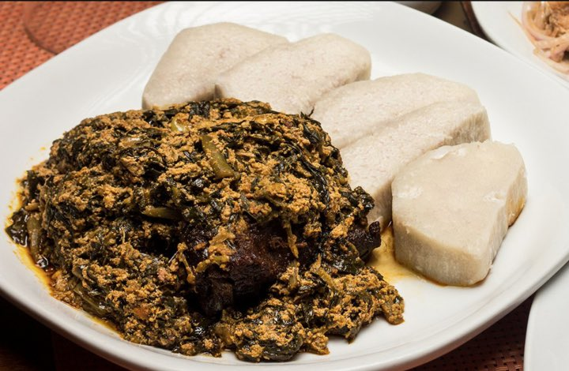

Ampesi

Description
Ampesi or Abom is any meal of either boiled yam, plantain, cocoyam, or a mix of any two or all of the above served with sauce be it gravy, Kontomire, garden egg stew or thick palm nut soup
Ingredients
- Yam
- Plantaint
- Koobi
- Contomire
- Red oil, tomato, onions
Steps
- Wash and peel plantain and put into a sauce pan.
- Wash kontomire with salty water. Cut stalks off and add to the plantain in pan. Add water enough to boil. Add salt. Put on fire to boil.
- Wash onions, tomatoes, garlic, ginger and pepper. Cut all except pepper into pieces and grind in and earthen ware bowl.
- Grill salted tilapia. Add to the content of the earthen ware bowl and grind.
- Taste to see if salt from the tilapia is enough. If not enough add a little. Put that aside.
- Add the kontomire to the content of the earthen ware bowl. Grind to mix.
- Wash smoked herrings. Remove scales and bones. Break into pieces and add to stew in earthen ware bowl.
- Put a little palm oil on fire to heat up a bit. Pour hot palm oil into earthen ware bowl and stir to get a complete mix.
- Bring plantain out if flask and serve in a plate or bowl. You can choose to eat the stew from the earthenware or dish on to a plate.
- Food is served. Enjoy your meal